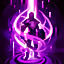

Modos De Juego
En esta parte de la seccion mostraremos los diferentes modos que tiene el juego, veremos parte de la competitividad que hay tanto jugando partidas clasificatorias como partidas clasificatorias flex o normal
Normal
Este es el modo original del LoL y se basa en destruir el Nexo del enemigo.Se deben ir destruyendo las torretas e inhibidores que protegen los Nexos para asi ganar la partida este modo de juego no suma puntos de clasificatoria ni nada por el estilo, se recomienda jugar campeones para practicarlos
Clasificatoria
En este modo es el mismo mapa que en normal, te emparejan con personas de tu mismo elo, pero al principo cuando debemos elegir nuestro personaje cuenta con un sistema de "baneos" que seria bloquear a 5 campeones de cada equipo que mas broken esten en el momento o simplemete tu counter match al que no quiere enfrentarte ya que con tu campeon seria mas dificil ganarle
Flex
En este modo es el mismo sistema que en clasificatoria pero nos emparejan con personas de cualquier elo tambien tiene un sistema de puntajes y promociones (como clasificatorias) pero no es tan importarte o no se lo toma tan serio
Urf
Este modo de juego (temporal) es un modo de juego que como indica el nombre ulta rapid fire tenemos bajos enfriamientos en nuestras habildades y no usamos mana ni energia por lo tanto podemos spamear rapidamente todas nuestras habilidades es un modo de juego divertido
Aram
Este modo de juego es un 5 vs 5 en una sola linea donde solo podemos comprar cuando emepezamos y cada vez que nos matan y reiniciamos en la base es un juego divertido tambien ya que nuestros campeones nos tocan de manera aleatoria al inciar la cola
Hechizos de Invocador
Barrera
Protege a tu campeón y absorbe 115-455 de daño (según el nivel del campeón) durante 2 s.
Claridad
Restaura el 50% del maná máximo de tu campeón. También restaura a los aliados el 25% de su maná máximo.Este hechizo solo esta disponible en Aram
Clean
Elimina todas las debilitaciones (excepto la supresión y elevación por los aires) y efectos de hechizos de invocador que afectan al campeón, y reduce en un 65% la duración de las debilitaciones recibidas durante 3 s.
Curar
Restaura 90-345 de vida (según el nivel del campeón) y otorga un 30% de velocidad de movimiento adicional durante 1 s tanto a ti como al campeón aliado objetivo. La curación se reduce a la mitad para las unidades afectadas recientemente por Curar.
Destello
Teleporta a tu campeón una corta distancia hacia la posición del cursor.
Extenuacion
Extenúa al campeón enemigo objetivo, lo que reduce en un 30% su velocidad de movimiento y en un 40% su daño durante 3 s.
Fantasmal
Durante 10 s, tu campeón puede moverse a través de unidades y obtiene entre un 24% y un 48% (según el nivel del campeón) de velocidad de movimiento. Fantasmal aumenta su duración al conseguir un asesinato o asistencia.
Ignite
Hace arder a un campeón enemigo durante 5 s, infligiéndole 70-410 (según el nivel del campeón) de daño verdadero, garantiza la visión del objetivo y reduce los efectos de curación que este reciba.
Marca
Lanzas una bola de nieve en línea recta hacia tus enemigos. Si alcanzas a uno, queda marcado, lo que otorga visión verdadera y, a continuación, tu campeón puede desplazarse con rapidez hasta él.Este hechizo solo esta disponible en Aram
Smite
Inflige 450 de daño verdadero a monstruos medianos, gigantes o épicos o a súbditos.

Teleport
Tras 4 s de canalización, teleporta a tu campeón al súbdito, estructura o guardián aliados que hayas escogido y le proporciona una mejora de velocidad de movimiento.
Ultimos Nuevos Campeones
Como ya sabemos a League of Legends le gusta agregar constantemente campeones nuevos en esta secciones te voy a mostrar los 3 ultimos campeones.
Akshan El Centinela Rebelde
Moviéndose entre las sombras de la Shurima oriental, un vengador justiciero acecha a quienes han hecho sufrir a otras personas. Aplica un castigo rápido, implacable e impuesto por una curiosa arma que enmienda los males cometidos por sus enemigos.
Akshan, que creció en las calles de la ciudad de Marwi, supo lo que era la injusticia nada más nacer. En un lugar en el que los señores de la guerra locales se apropiaban de todo lo que querían, la mayor parte de la población sobrevivía manteniendo la cabeza agachada y evitando meter las narices en asuntos ajenos. Por mucho que lo intentara, el joven Akshan no podía pasar por alto los actos malvados y solía intervenir con presteza cuando veía que alguien estaba recibiendo un mal trato. Esta forma de actuar hizo que el muchacho se ganara muchos enemigos poderosos y, en una fatídica ocasión, se llevó una paliza a la que estuvo a punto de no sobrevivir.
Pero la suerte estaba de su lado. Una anciana de nombre Shadya encontró al chico inconsciente, tirado en la calle donde se hallaba su morada. Si bien la tradición marwiana la instaba a no implicarse en nada parecido, decidió llevar a Akshan al interior de su casa y, contra todo pronóstico, el joven salió adelante.
A medida que Akshan iba recuperando sus facultades, se fue dando cuenta de que su salvadora no era una mujer cualquiera. Shadya era miembro de los Centinelas de la Luz, una orden ancestral que se dedicaba a combatir los Harrowings y a acabar con los agentes de la Niebla Negra. Consideraba a Akshan un muchacho atormentado, cabezota y desafiante, pero también vulnerable. Tras muchas discusiones con el chico sobre las múltiples normas de la casa, Shadya no tardó en descubrir que había muchas cosas buenas en él. Tenía coraje y consciencia: una combinación que escaseaba mucho en Marwi. Conocedora del gran potencial del muchacho, Shadya hizo un trato con él: le dejaría quedarse en su casa, donde estaría a salvo de sus enemigos, y, a cambio, él se dedicaría a la orden de los Centinelas.
Shadya y Akshan enseguida forjaron un vínculo gracias a las enseñanzas que ella le procuraba sobre la supervivencia de un Centinela en solitario. Akshan, el harapiento niño callejero, se convirtió en la pesadilla de los canallas. Sin embargo, aunque las habilidades de Akshan iban mejorando día tras día, observó que su mentora estaba cada vez más distante y que había algo que le quitaba el sueño.
Shadya terminó por contarle a su aprendiz el motivo de sus preocupaciones: se acercaba un Harrowing, uno más grande de lo que el mundo había visto nunca, que traía un ejército de espectros y espíritus malignos desde las Islas de la Sombra. Al parecer, la única esperanza que tenían de impedir el cataclismo residía en las armas de los antiguos Centinelas, que yacían enterradas en las criptas y tumbas de Shurima. Para salvar al mundo de la Ruina, debían hacerse con aquellas armas. Y pronto.
Para disgusto de Shadya, las antiguas armas ya estaban en manos de señores de la guerra de la región. La Centinela les suplicó que entregaran los artefactos para la lucha contra el implacable Harrowing, pero ellos se negaron, decididos a desatar el misterioso poder de las armas por su cuenta.
Con el tiempo en su contra, Akshan y Shadya se vieron obligados a apañarse con lo que tenían. Cuando se pusieron a repasar el arsenal, Akshan descubrió una pistola especialmente portentosa escondida en la cámara de la base. Alarmada, su mentora se la arrancó de las manos y le ordenó que nunca la usara. El arma, conocida como "el Absolvedor", estaba imbuida de un antiguo encantamiento que otorgaba un extraño e indescriptible poder: podía arrebatarle la vida a un asesino y, al hacerlo, las víctimas más recientes de esa persona resucitaban.
—Nadie debe empuñarla —advirtió Shadya—. Las cuestiones de vida y muerte es mejor dejárselas al destino.
Pero a Akshan todavía le irritaban las normas de los Centinelas, y tenía un punto de vista bastante firme con respecto al destino. Se había pasado la vida entera viendo cómo buenas personas sufrían un trato horrible mientras que los malos campaban a sus anchas, haciendo de las suyas sin consecuencias. Si el destino existía realmente, no cabía duda de que necesitaba ayuda, una ayuda que el Absolvedor podía proporcionar.
Conforme crecía su interés por aquella arma, Akshan siguió sacándole información a Shadya sobre la historia de la pistola y se enteró de un hecho que lo dejó paralizado: la mujer había utilizado aquella arma para salvar a Akshan cuando lo encontró inconsciente en la calle años atrás. Con ella, mató al criminal que lo había dejado medio muerto y, al hacerlo, el joven Akshan volvió a la vida. Tras esta revelación, el muchacho se preguntó por qué él era el único que había resucitado gracias al arma. Claramente, había otros que se lo merecían más.
Mientras Akshan cuestionaba las reglas anticuadas de su orden, su mentora continuaba presionando a los señores de la guerra para que entregaran las armas robadas. Las tensiones entre las dos partes fueron aumentando hasta que, un trágico día, Akshan volvió a casa y se encontró a Shadya asesinada en medio de la calle, casi en el mismo lugar en el que él había desfallecido tanto tiempo atrás.
Akshan sabía lo que tenía que hacer. Realizó algunas modificaciones clave al Absolvedor y se lanzó al desierto abrasador con el arma prohibida, ávido de venganza. Aunque le resultaba imposible averiguar cuál de los señores de la guerra había asesinado a su mentora, conocía un método que no fallaría: los mataría uno a uno hasta que Shadya volviera a la vida en Runaterra.
Gwen La Costurera Sagrada
En el reino olvidado de Camavor, existió una vez un pueblo alejado del trono. Fue aquí, en las colonias rurales, donde una humilde costurera fabricó a su amada muñeca, Gwen.
Lo poco que Gwen recuerda de su pasado, lo recuerda con amor. La costurera y la muñeca pasaban sus días confeccionando, Gwen con las tijeras en sus manos inmóviles mientras su creadora cosía cerca de ella con hilo y aguja. Por las noches, las dos se escabullían debajo de la mesa del comedor y la costurera desafiaba a Gwen a duelos inventados: el choque de los cubiertos contra las tijeras resonaba en la cocina iluminada por velas.
Con el tiempo, los juegos se detuvieron y la luz se apagó. Gwen no podía entender por qué, pero siempre que luchaba por recordar más detalles, sentía una punzada de dolor, ligada a un hombre cuyo nombre y rostro no conocía. Mientras la marea se llevaba sus recuerdos, Gwen se quedó inmóvil por siglos, silenciosa y olvidada.
Pero una noche, sus ojos se abrieron. Gwen se despertó por primera vez en una playa oscura lejos de su hogar. Por obra de una magia que desconocía, se había transformado en una niña de verdad que podía mover las manos y los pies... ¡por su propia cuenta!
Gwen se tomó la vida con alegría. Saltó por la arena, sorprendida de cuán lejos podían ver sus ojos y de cuán maravilloso se sentía el viento en su espalda y cada guijarro en su mano. A lo largo de la costa, escombros desperdigados y abandonados por milenios llamaron su atención. Al lado de cofres rotos, había herramientas que le resultaron extrañamente familiares.
Tijeras. Agujas. Hilo.
Gwen las reconoció de inmediato. Eran las herramientas de su creadora. Cuando sus dedos las tocaron, un estallido de niebla destellante fluyó de sus manos. Para ella, era algo confiable y cálido, como el abrazo reconfortante de un pasado bendecido.
Pero Gwen no fue la única atraída por esta magia.
Al acecho en las islas, una niebla diferente se hizo presente. Negra como la noche, se enroscaba y retorcía, transformándose en espectros horrorosos. Algo en la recién descubierta presencia de Gwen los atraía... algo que deseaban más que cualquier otra cosa.
Mientras los espectros se acercaban a ella, Gwen permaneció impertérrita. Lanzó una estocada con sus tijeras. Vio con alegría que su niebla llenaba el aire, hechizando el tamaño y la fuerza de sus herramientas para convertirlas de simple acero a magia espectral.
Pero los espectros eran implacables. Se multiplicaban, alimentados por la creciente Niebla Negra. Gwen comenzó a sentir un dolor trágico y extrañamente familiar. Rodeada de espectros, sus recuerdos reprimidos salieron a flote. Acudieron a su memoria imágenes de su creadora, enferma, herida y llena de angustia. Cerca de ella, se encontraba un hombre cuyo rostro al fin pudo recordar.
Viego.
Con solo pensar en su nombre, Gwen cayó de rodillas. Con nostalgia, pensó en los momentos pasados en compañía de su creadora —tiempos más simples y felices— y miró sus tijeras por última vez...8<-8<-8<-8<-
Fue en ese momento que Gwen se dio cuenta de algo maravilloso. Su creadora, víctima de la retorcida vanidad de ese hombre, no se había ido por completo. Las herramientas de la costurera, las mismas herramientas que habían cosido y unido a Gwen, ahora estaban en sus manos. Gwen creía que esto no era una simple coincidencia. Sabía, en su interior, que su creadora todavía estaba con ella, que todavía luchaba.
Este era un regalo que Gwen no desperdiciaría.
Tomando agujas e hilo, lanzó nubes de Niebla Sagrada en un intento por rechazar el enjambre de espectros. Sus tijeras cortaban con fuerza y rapidez, evocando aquellas noches felices donde su creadora imaginaba grandes batallas debajo de la mesa de la cocina. Pronto, los espectros se habían ido.
Aunque triunfante, Gwen comprendió que esto era solo el comienzo. Presentía que esos espectros y Viego estaban conectados, y que eran responsables de la propagación de un inmenso dolor. Sin tiempo que perder, decidió rastrear la Niebla Negra y detenerla, cueste lo que cueste. Gwen sabía que esta tarea sería agotadora, pero a la vez disfrutaba de cada segundo de su nueva vida, porque ¿quién sabía cuánto podía durar esta bendición?
Con una oportunidad de vivir única entre sus manos, Gwen elige ser una fuerza positiva e indomable contra todo pronóstico. Viaja por Runaterra, decidida a devolverle la alegría a aquellos que están heridos y dolidos. Para Gwen, cada momento es precioso y cada paso tiene un propósito.
Vex La Tristologa
En el corazón negro de las Islas de la Sombra, una solitaria yordle recorre la niebla espectral, satisfecha con su miseria tenebrosa. Con un suministro interminable de malestar y escoltada por una poderosa sombra, Vex se protege de la vitalidad y la felicidad del mundo exterior, y de todos los fastidiosos ''normies'' que lo habitan.
Criada en la Ciudad de Bandle, Vex jamás se sintió parte de su pueblo. La extravagancia y el color del reino yordle le resultaban empalagosos. A pesar de los enormes esfuerzos de sus padres, nunca pareció encontrar su ''espíritu yordle'' o amigos como ella, y eligió pasar la mayor parte del tiempo encerrada en su habitación.
Allí encontró una extraña alma gemela en su propia sombra. Era negra (su color favorito), y no hablaba: la compañía perfecta para la joven taciturna. Aprendió a entretenerse con la sombra, y hacía lúgubres pantomimas para su propia diversión.
Después de todo, solo era una sombra, incapaz de proteger a Vex de la alegría odiosa que la rodeaba. Sin duda, tenía que haber algo más. Algo más oscuro. Algo triste. Algo justo como ella.
Ese algo vino en la forma de un Harrowing, nubes espesas de Niebla Negra que cubrieron a la Ciudad de Bandle y causaron pánico en sus habitantes. Mientras la mayoría de los yordles lucharon valientemente para derrotar a la Niebla, Vex se interesó en la fétida miasma y comenzó a seguirla para dar con su origen.
Cuando llegó a las Islas de la Sombra, Vex no podía creer lo que veían sus ojos. Vastas superficies de tierra y mar, desprovistas de toda vida y color, se extendían ante ella. Aquí, ella podía al fin ser taciturna, sin que la risa y la alegría de otros la molestaran.
A medida que los días pasaban, Vex se dio cuenta de que la Niebla Negra estaba teniendo un extraño efecto sobre ella. Su sombra había tomado una nueva forma fantasmagórica, mucho más animada y expresiva que su portadora, y su magia yordle benigna se había transformado en algo mucho más siniestro. Vex ahora podía esparcir su miseria a diestra y siniestra.
''¿Quién creó este maravilloso y horrible lugar?'', se preguntó.
La respuesta a esta interrogante llegó rápido, cuando el Rey Arruinado, Viego, apareció en las Islas, buscando extender su Niebla a todos los rincones de Runaterra. Cuando conoció a Vex, Viego se dio cuenta de que la yordle tenía una habilidad única para esparcir la desesperanza, lo cual hacía que las personas se volvieran más vulnerables ante su propio Harrowing. Vex, a cambio, se sintió inspirada por la visión de Viego: un mundo cubierto de Niebla Negra. Rápidamente los dos se hicieron aliados, y se dispusieron a convertir al mundo en un páramo horroroso.
Antes de que Viego pudiera completar su visión, Vex descubrió su intención oculta: reclamar el alma de su reina muerta Isolde, y reunirse con ella en completa dicha matrimonial. Ella se estremeció, disgustada; se sentía traicionada al pensar que el hombre que aniquilaría la felicidad en el mundo, estaba de hecho buscándola para sí mismo. Vex dejó que los Centinelas de la Luz derrotaran a Viego, y que sus sueños de un mundo arruinado se estrellaran contra las ruinas de Camavor. Sola otra vez, vio decepcionada cómo el mundo volvía a ser el lugar brillante y colorido que siempre había odiado. Encontrar una melancolía perdurable sería mucho más difícil de lo que creía.
Conocía un último lugar al que podía ir: una manera infalible de conseguir la miseria que anhelaba. Visitó a sus padres en Ciudad de Bandle, ansiosa por mostrarles en lo que se había convertido y regodearse en su descontento.
La joven yordle observó cómo sus padres se quedaron boquiabiertos cuando la vieron, duros como la piedra. Sus expresiones pasaron de conmoción, a negación, a aceptación reticente.
''Cariño. No entendemos... esto'', dijo su madre señalando por completo a Vex.
''Pero te amamos incondicionalmente'', agregó su padre. ''Y si tú eres feliz, nosotros somos felices por ti''.
Con una mirada apática, Vex dejó escapar un fuerte suspiro de exasperación. ''Son lo peor'', resopló.
Atravesó la sala de estar de sus padres, ansiosa por regresar a las Islas de la Sombra, donde podía ser ella misma sin que nadie la molestara.